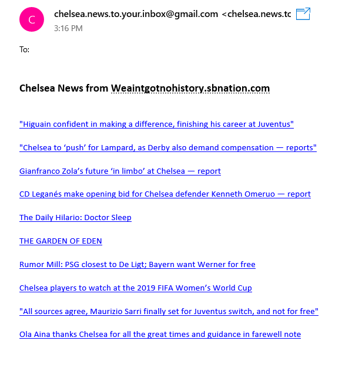

Features of Chelsea FC Scraper
Runs daily at user specified time.
Sends email to users in the database, which can be updated using the text file.
Scrapes weaintgotnohistory.sbnation.com for Chelsea news.
Creates the news along with hyperlink to the story.
Dependency
To run Chelsea FC Web Scraper
Clone this repository and change directory to the cloned folder. Then:
-
After you are in the main folder of the repository type:
xdg-open emails.txtThen add email addresses of people separated by a new line
-
If you have all the required dependency then type:
python controller.py &This runs the process in the background and allows you to continue your work
Some screenshots
Email sample send by the scraper
If you like it please star and fork!